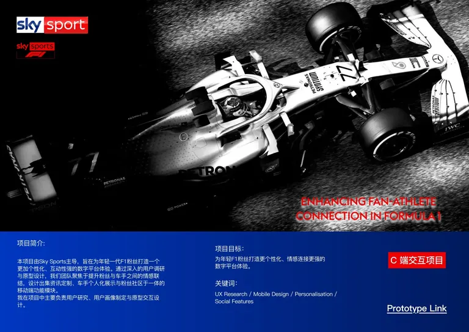

Sky Sports F1 / 粉丝互动体验
围绕车手，重新连接 F1 粉丝体验
粉丝关注的不只是比赛结果，还有车手是谁、他们如何生活，以及如何与其他粉丝分享热爱。在 Sky Sports 项目中，我带领小组探索现有移动端产品如何承载这些不同的需求。

需要解决什么问题
车手资讯散落在多个平台；不同粉丝对技术数据、幕后故事和互动表达有不同偏好。一个统一的信息流，很难同时回应所有人的关注点。
项目参与
我担任组长，组织了覆盖 4 个国家、12 位用户的深度访谈，提炼出两类用户画像，并带队设计个性化仪表盘和粉丝社区的交互原型。项目原稿记录了访谈、亲和图、体验地图、故事版和界面迭代，展示从研究发现到设计取舍的过程。
关键决策与取舍
- 01
扩展已有产品，保持连续性
在 Sky Sports 原有应用的操作逻辑与品牌基础上扩展功能，保留用户熟悉的入口和使用方式。
- 02
让关注对象组织信息
通过可定制仪表盘聚合关注车手、赛程和资讯，并用赛前、赛中、赛后的触点检查内容与时机。
- 03
让内容与表达相连
将车手主页与社区讨论、投票、粉丝墙和活动关联；根据原型反馈补充赛事结果，并调整含义不明确的按钮。
产出与验证到哪里
形成用户画像、体验地图、故事版、信息架构及中高保真原型，并记录反馈后的界面调整。
展示阶段为用户研究与交互设计，不将参与度、情感联结等设计目标当作上线效果。
把作品展开来看
带到下一个项目的思考
有价值的个性化，需要先理解用户在什么时刻关注什么，再决定信息如何聚合，以及哪些互动值得被放到前面。